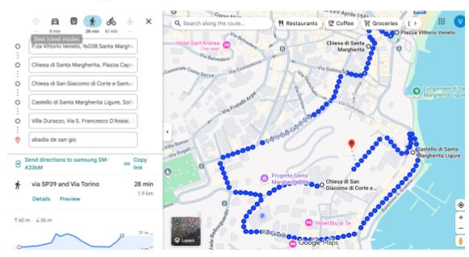

Santa Margherita de Liguria

- Centro Histórico: perderse por sus calles para disfrutar el ambiente pueblerino, entre iglesias, edificios monumentales, panaderías, cafés y restaurantes.
- Catedral de la Madonna della Rosa (Santuario di Nostra Signora della Rosa): ubicada en la plaza central de la ciudad, con una plaza exterior muy linda.
- Visitar la Iglesia de San Giacomo di Corte, la Iglesia de San Siro, la Iglesia de los Frailes Capuchinos, el Oratorio de Nuestra Señora de la Addolorata y el Oratorio de la Madonna del Suffragio.
Todos estos lugares son fácilmente accesibles a pie, en pocos minutos, desde el centro.
- Castello di Santa Margherita Ligure: vistas espectaculares.
- Villa Durazzo: gran complejo compuesto por dos villas y un espectacular jardín de estilo italiano.
La mejor forma de llegar es ingresando al parque por la puerta principal (Via Principe Centurione / Via Giuncheto), para comenzar con un paseo tranquilo entre árboles y estatuas.